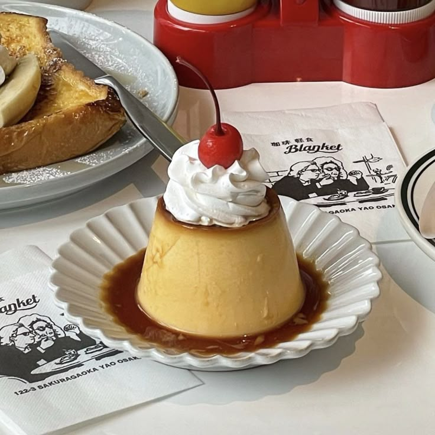
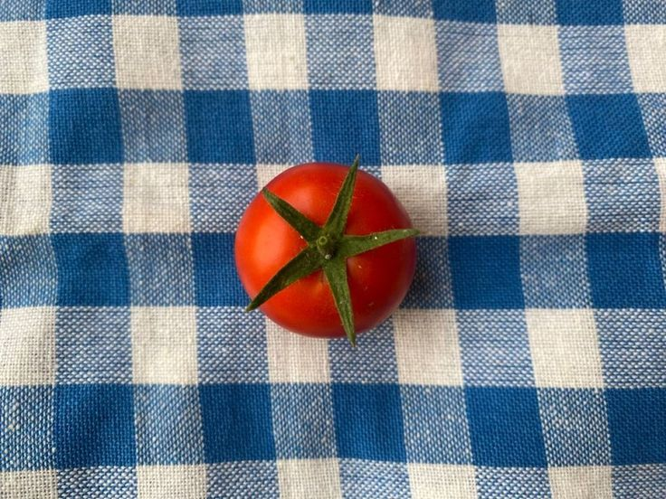
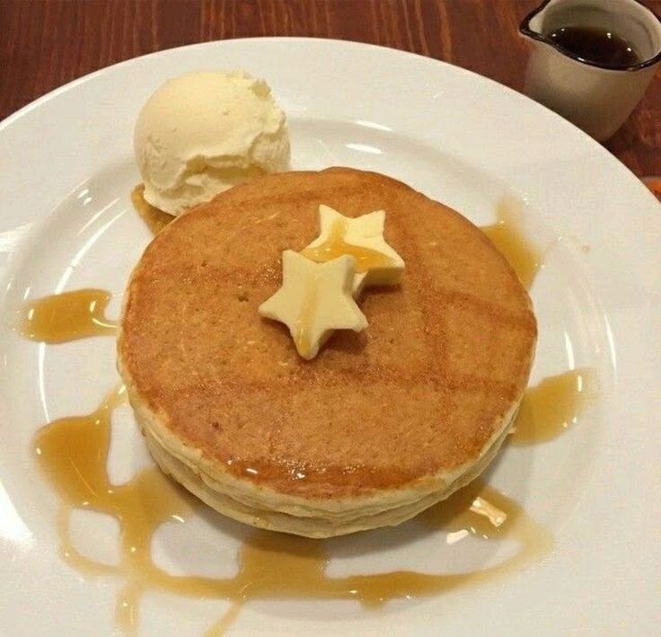

Quantas vezes você já ficou minutos ou até horas discutindo com os amigos ou a família sobre onde comer?
Cada um sugere uma coisa, ninguém se decide e no fim acabam indo no mesmo lugar de sempre por pura preguiça de pesquisar. Isso te lembra alguma situação?

O Problema
Esse problema de indecisão é algo real e constante. As pessoas têm dificuldade de escolher o que comer, seja por preço, por distância ou simplesmente por algo chamado: "indecisão crônica".
Existem muitos restaurantes ótimos na nossa região, mas não existe uma ferramenta que ajude a tomar essa decisão de forma rápida e divertida. O resultado? Perda de tempo, discussões desnecessárias e a sensação de que "nunca tem nada novo para experimentar".
A Solução
Pensando nisso, tivemos a ideia do SwipFood. O nome já entrega a ideia: é um site que funciona como um "Tinder dos restaurantes" para a nossa região.
➜ Como ele funciona?
- O usuário acessa o site e vê todos os restaurantes locais disponíveis.
- Ele pode registrar suas preferências: se quer algo barato, uma comida japonesa, pizza, hambúrguer, etc.
- Em vez de uma busca chata e demorada, ele vai arrastando para a direita as opções que interessam e para a esquerda as que não servem.
- De forma rápida e intuitiva, o SwipeFood processa os 'matches' e entrega a melhor opção ou um ranking personalizado para você!
Público-Alvo
Nosso foco inicial são os grandes grupos de indecisos:
- Casais que não se entendem na hora de escolher o jantar
- Famílias com crianças que têm gostos diferentes
- Turmas de amigos que querem agradar todo mundo
- Qualquer pessoa que quer transformar a escolha da refeição em algo rápido, leve e divertido

Diferencial e Mercado
O que torna o SwipFood único é a gamificação da escolha. Nós não somos só mais um site com lista de restaurantes. Queremos entregar uma experiência interativa que resolva um problema comum: a indecisão — de um jeito rápido e, acima de tudo, divertido.
E o melhor de tudo é que, com o site, fortaleceríamos até mesmo o comércio local da nossa região! Pequenos negócios ganham visibilidade, e você descobre lugares incríveis que nem sabia que existiam.

Pronto para acabar com a indecisão?
Junte-se ao SwipFood e transforme a escolha do seu próximo restaurante em uma experiência rápida, divertida e personalizada!